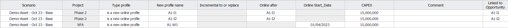
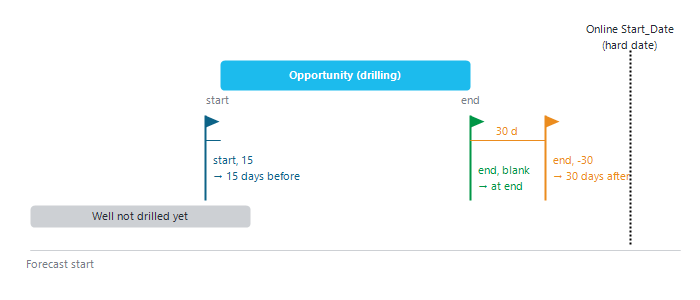

|
New profiles
1. Overview — when does a profile come online?
A new profile tells Precept when a production or injection profile starts in the forecast: a new well coming online, an extra profile added to an existing well (for example after a workover), or a profile that replaces another one. The start date can be:
•linked to an opportunity of the sequence of events — the profile starts when the opportunity starts or ends, so it moves automatically when you change the sequence. This is the usual case for future wells (see Opportunities);
•a "hard" date — the profile starts on a fixed date, whatever the sequence.
The profile itself (the rates) is defined elsewhere: with a decline curve in "Decline Curves" (see Decline curves: Production and Injection potentials), or from Material Balance. The new profile only sets when it starts.
2. Open the New profiles table
1.Select the scenario on the main window.
2.Click "New profiles and Conversions" on the main ribbon. The window opens on "New profiles"; the list at the top switches between "New profiles" and "Conversions" (see Well conversion).
3.Click "Add" on the ribbon to add a row, fill it in, then click "Save".
4."Delete selected rows" and "Delete All rows" remove rows; "Filter by project:" shows the rows of one project only.
The table shows every new profile of the scenario, including those created from an opportunity (their "Linked to Opportunity" column holds the opportunity name). Rows with no "Type profile" are dropped when you save.

Example: A1-I1 and A1-I2 are future wells that come online when the opportunities A1-I1 and A1-I2 are executed. A1-W1 comes online on a hard date, 01/04/2023.
3. Columns
|
Column
|
Meaning
|
|
Project
|
The project the profile is reported under. For "is a new online profile", it is filled in from the well's project when you pick the well. If the project is excluded from the forecast in the settings, the row is ignored.
|
|
Type profile
|
What the profile does (section 4).
|
|
New profile name
|
For a new online profile: the well, picked from the wells of the Asset Model. For an incremental or replacing profile: the name you give to the new profile (it then appears as a profile to define in Decline Curves).
|
|
Incremental to or replace
|
The existing well that the profile adds to, takes away from, replaces or restarts. Greyed out for a new online profile.
|
|
Online after
|
Event-based start: the opportunity the start date is linked to.
|
|
Reference date
|
"start" or "end" of that opportunity. Blank means "end".
|
|
Number of days before
|
Optional offset from the reference date. A positive number starts the profile that many days before the reference date; a negative number starts it after (for example -30 = 30 days after).
|
|
Online Start_Date
|
Hard start date. Used only when "Online after" is blank.
|
|
CAPEX, OPEX, OPEX unit, Group cost to Node
|
Optional costs attached to the profile, used by the economics.
|
|
Comment, Linked to Opportunity
|
Free comment; the opportunity this row was created from, if any.
|
Use either the event-based columns ("Online after", "Reference date", "Number of days before") or "Online Start_Date". The cells that are not used are greyed out.

Figure 1 — How an event-based start date is computed from the opportunity, the reference date and the number of days before.
4. Types of profile
•"is a new online profile" — a well that is not producing yet (typically a new well). Precept keeps it shut in from the forecast start until the start date (timeline comment "Well not drilled yet"). When the start is the end of an opportunity, the well is also shown shut in during that opportunity (the drilling).
•"is positive incremental to" — from the start date, the potential of the new profile is added to the potential of the well in "Incremental to or replace" (for example the gain of a stimulation).
•"is negative incremental to" — the same, but the potential of the new profile is subtracted. The result never goes below zero.
•"replace" — from the start date, the well's profile is replaced by the new profile.
•"restart under different project" — from the start date, the production of the well in "Incremental to or replace" is reported under the project of this row (for example a shut-in well brought back by a new project).
•"Data acquisition" — used for Exploration and Appraisal wells: the drilling appears in the forecast, with no production profile. Precept creates these rows when you add such a well with "Create Opportunity to drill the well" (see Add wells to Asset Model).
An incremental or replacing profile only takes effect if the well it applies to is online at the start date; it does nothing on a well that is not drilled yet or abandoned.
5. New profiles created from opportunities
When you create an opportunity with "Impact on Forecast" = "New profile", you fill in the same columns in the opportunity window, and the rows are saved here with the opportunity name in "Linked to Opportunity". When you add a well with "Create Opportunity to drill the well", Precept creates the row for you: "is a new online profile", online after the drilling opportunity, reference date "end".
|